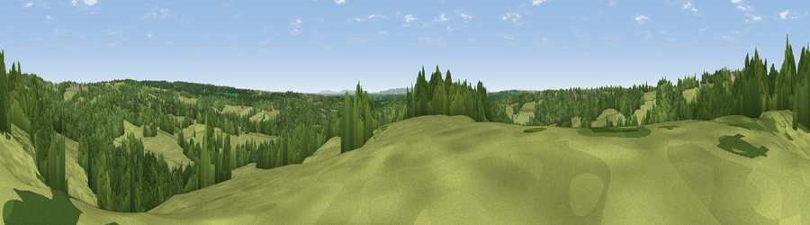

Viewpoint near Ardingly
#31916 in England · top 40% of its area beats it · near ArdinglyWhere it is
The exact computed spot (TQ 36325 30475). Click the marker for map links.
The view, rendered

A 360° render of this exact spot computed from the terrain model, tree cover and land cover — summer colours, afternoon light, calibrated against photographs of famous viewpoints. Real trees, hedges and buildings will differ in detail.
The panorama
Grey silhouette: terrain skyline in each direction (720 bearings, Earth curvature and refraction included). Dashed green: skyline with trees (+15 m) and buildings (+8 m) as obstacles. Blue strip: how far the ground is visible on each bearing.
Where the view opens
Wedge length = distance to the farthest visible ground on that bearing (vegetation-aware). Rings at 10, 25 and 50 km.
What fills the view
49% grassland · 49% woodland · 2% cropland ·
Angular shares of the visible panorama (visual magnitude), not map area. Landscape diversity 0.35 (0–1 Shannon).
Key numbers
More beautiful places nearby
The staircase of upgrades: each row has a higher view potential than everything closer. Driving times are estimates from straight-line distance, calibrated against real road routing — check an actual route before setting out.
| Place | Direction | Drive | Score |
|---|---|---|---|
| Viewpoint near Sharpthorne | NNE · 1 km | ~3 min | 41.0 |
| Viewpoint near Turners Hill | NNW · 6 km | ~12 min | 47.7 |
| Viewpoint near Fairwarp | E · 11 km | ~20 min | 53.9 |
| Viewpoint near Upper Hartfield | E · 11 km | ~20 min | 59.6 |
| Viewpoint near Westmeston | SSW · 18 km | ~31 min | 81.1 |
| Ditchling Beacon | SSW · 18 km | ~31 min | 81.8 |
| Fulking Hill | SSW · 23 km | ~38 min | 82.2 |
| Viewpoint near Firle | SSE · 26 km | ~42 min | 83.8 |
51.05744, -0.05616 · source: screening · position refined by local search. Computed location — check access rights before visiting.